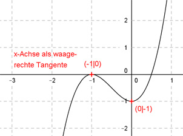

Aufgabe 47 Der Graph einer ganzrationalen Funktion 3. Grades schneidet die x-Achse bei -1, hat dort die x-Achse als Tangente und einen Tiefpunkt bei (0|-1). Wie lautet seine Funktionsgleichung?  Allgemeine Form einer ganzrationalen Funktion 3. Grades: f(x) = ax3 + bx2 + cx + d f’(x) = 3ax2 + 2bx + c f’’(x) = 6ax + 2b 4 Bedingungen: 1. Schneidet die x-Achse bei - 1 bedeutet: f(-1) = 0 --> a * (-1)3 + b * (-1)2 + c * (-1) + d = 0 --> -a + b - c + d = 0 I 2. Hat dort die x-Achse als Tangente bedeutet, berührt die x-Achse: f’(-1) = 0 --> 3a * (-1)2 + 2b * (-1) + c = 0 --> 3a - 2b + c = 0 II 3. Hat einen Tiefpunkt bei (0|-1) bedeutet zum einen: f(0) = - 1 --> a * 03 + b * 02 + c * 0 + d = -1 --> d = -1 4. Hat einen Tiefpunkt bei (0|-1) bedeutet zum anderen: f’(-1) = 0 --> 3a * 02 + 2b * 0 + c = 0 --> c = 0 I * 2 + II (d = - 1 und c = 0 eingesetzt) -2a + 2b - 2 = 0 3a - 2b = 0 ----------------- a - 2 = 0 | +2 a = 2 a = 2 und c = 0 in II eingesetzt: 3 * 2 - 2b = 0 6 - 2b = 0 |+2b 6 = 2b |:2 b = 3 Gesuchte Funktionsgleichung: f(x) = 2x3 + 3x2 - 1